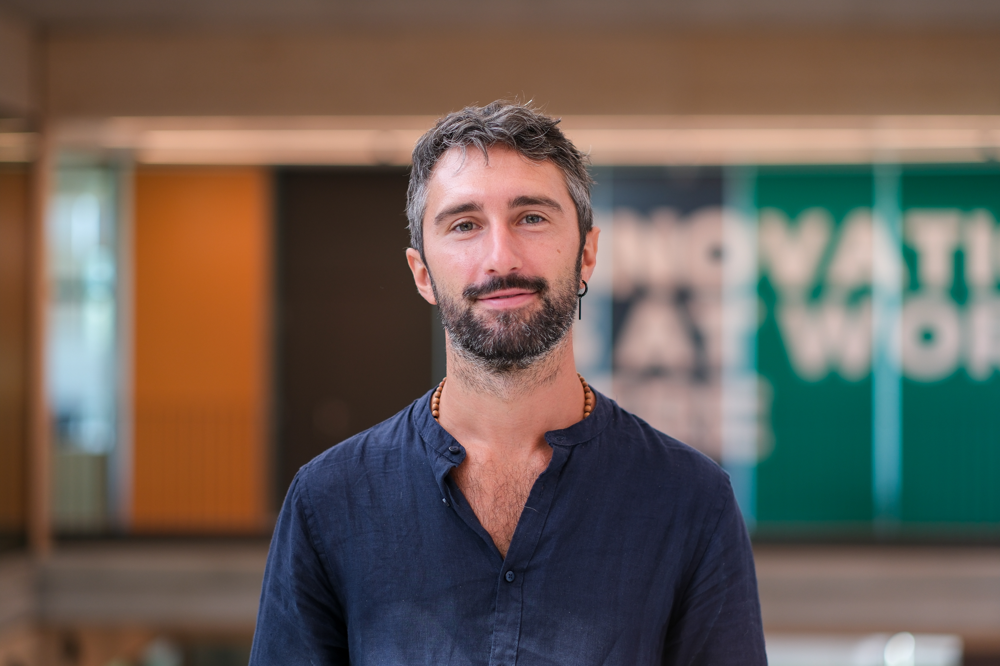
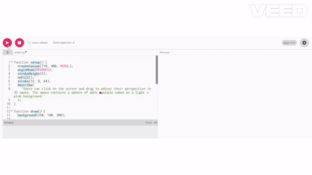

I make hard things click. Science and code, taught by someone who actually does both.
PhDComputational Bio
1:1Custom materials
🌍Online & In-person
// About
I hold a PhD in computational biology and spent 8+ years doing research — cancer genomics, developmental biology, building tools published in top journals.
But my real superpower is something else: I'm genuinely obsessed with many things at once. Science, philosophy, music, code, sports, travel. That breadth is exactly what makes me a different kind of teacher.
When you're stuck on a physics concept, I find the angle that fits your world — not a generic textbook explanation. When code feels abstract, I connect it to something you already love. I don't translate difficulty away. I find the door that was always there.
Every session comes with custom materials: slides, handouts, and exercises built around your specific questions. Not recycled content — made for you.

Research background
Precision oncology · Cancer genomics · Developmental biology · Multi-omics · Published in Nucleic Acids Research & Scientific Reports
Python, R, JavaScript and generative art — taught like a conversation, not a lecture.
PythonRJavaScriptp5.jsProcessingGenerative artData viz
// What you'll learn
🐍
Python
The language of science, data and automation. Clean syntax that reads almost like English — once you get Python, everything else becomes easier. Used by researchers, startups and data scientists worldwide.
📊
R & Data analysis
R is the statistician's power tool. Tidyverse makes data wrangling intuitive, ggplot2 produces publication-quality charts. If you work with data, this is your language.
🌐
JavaScript & web
The language of the web — anything interactive you see in a browser is JavaScript. We go from basics to building real pages, handling events and creating smooth user experiences.
🎨
Generative art
p5.js and Processing let you draw with code. Noise fields, particle systems, recursive shapes, generative patterns — visual output that makes you want to keep going.
🔧
Problem solving
The meta-skill: how to read an error, decompose a problem, search effectively and think like a programmer. This is what separates people who get stuck from people who ship things.
🚀
Your project
Every session builds toward something real — a data dashboard, a generative poster, an interactive tool. You leave with something you can show, not just notes you'll forget.
// Simulatori
Fai pratica ovunque. Zero kit. Zero costi.
Ogni concetto lo impari su simulatori professionali — gli stessi usati in produzione. Nessun software da installare, nessun hardware da comprare. Sei in un bar a Bangkok o a casa tua: l'ambiente è pronto.
Simulatori browser-based, zero installazione
Ideale per nomadi digitali e studenti in movimento
Stesso workflow dei developer professionisti
creative coding — live sketch

📷 placeholderpic/processing.gif
Every session. Every material. Included.
You never leave empty-handed. Each session produces a set of custom materials built around exactly what we covered.
Custom slides — written in your language, not the textbook's
Personalized handouts with examples drawn from your own project
Exercises calibrated to your weak points, not a generic problem set
Session notes with a summary of what we built and why
Code snippets and annotated scripts you actually ran during the session
24h async support — stuck between sessions? I answer.
// Choose your path
Same quality, different depth. Pick the programme that matches where you are right now.
🎓 High school
Foundation Track
Build real intuition for code from scratch. Ideal for students who want to pass exams and discover what programming can actually create.
Programme
01
Python basics
Variables, conditions, loops, functions — the real building blocks.
02
Data structures & logic
Lists, dictionaries, algorithms — thinking before typing.
03
Intro to web: HTML/CSS/JS
Make things appear in a browser. First taste of the web.
04
Creative coding with p5.js
Draw, animate, interact. Code as visual expression.
05
Final project
An interactive animation or small tool — yours to keep and share.
€50 / CHF 60 × 60 min
5-session pack €220 / CHF 250 — save €30 / CHF 50
Fully personalized to your level
Custom slides, handouts & session notes included
24h async support between sessions
Cancel up to 24h before
🎓 University / Professional
Advanced Track
Deeper algorithms, data science with R, and generative systems. For students who want to go further or professionals adding creative tech to their toolkit.
Programme
01
Python advanced
OOP, functional patterns, libraries (NumPy, pandas). Writing code that scales.
02
R for data science
Tidyverse, ggplot2, statistical modelling — from raw data to publication-quality output.
03
Advanced JS & canvas
Closures, async, WebGL basics. Building real interactive experiences.
Electricity, waves, mechanics and smart home automation — taught with real components, from breadboard to KNX.
MechanicsElectromagnetismCircuitsArduinoSensorsKNXETS6Smart Home
// What you'll learn
⚡
Electricity & circuits
Voltage, current, resistance — the ABCs of electronics. We start with Ohm's law on a breadboard and work up to building actual circuits. Theory only makes sense once you've held the components.
🔌
Arduino
Arduino is a microcontroller you program in C++. It reads sensors, controls LEDs and motors, communicates with your computer. The feedback loop — write code, see something physical happen — is addictive.
🌊
Waves & optics
Light and sound are waves. Once you understand interference, diffraction and the EM spectrum, optics stops being magic and starts being engineering. Lenses, lasers, fiber — all the same physics.
🎯
Mechanics
Newton's laws, energy, momentum — the foundation of everything physical. We build intuition first (what actually happens?) then formalize (why does the math describe it?). Exam prep included when relevant.
🏠
KNX & Domotics
KNX is the international standard for building automation — used in hotels, hospitals and smart homes across Europe. We cover topology, ETS6 software, group addresses and logic programming. A professional skill, taught from scratch.
🛠️
Your prototype
A sensor array that logs data, a KNX scene triggered by motion, a custom Arduino controller — you decide what to build. The prototype is yours to keep and put in your portfolio.
// Simulatori
Circuiti reali. Nessun kit da comprare.
Progetti Arduino, circuiti KNX, sensori — tutto simulato su piattaforme professionali prima ancora di toccare un componente fisico. Per i futuri maker nomadi di domani: laptop, connessione, e sei operativo.
Circuiti simulati in browser — LED, sensori, motori
Nessun kit da acquistare per iniziare
Fai pratica da qualsiasi posto nel mondo
circuit simulator — arduino
📷 placeholderpic/arduino.gif
Every session. Every material. Included.
Walk away with everything you need to keep going — custom-built for your level, your questions, your project.
Custom slides — your level, your language, your examples
Circuit diagrams and KNX topology sheets for what we built
Annotated Arduino sketches from the session
Formula sheets with context — not just the formula, but when and why to use it
Exercises targeting exactly what you found hard
24h async support — a question between sessions is never lost
// Choose your path
Same hands-on approach, different level of rigour. Pick the track that matches your background.
🎓 High school
Foundation Track
Build intuition for the physical world before formulas take over. Exam-oriented when needed, curiosity-first always.
Programme
01
Mechanics — intuition first
Forces, motion, Newton's laws. What actually happens before what the formula says.
02
Energy & thermodynamics
Work, heat, entropy. Made tangible through everyday examples and thought experiments.
03
Waves, sound & optics
How light and sound behave — and why. Interference, lenses, the EM spectrum.
04
Electricity & basic circuits
Voltage, current, Ohm's law, resistors — hands-on with a breadboard.
05
Arduino + intro to domotics
Code + circuit combined. Build a reactive device, then take a first look at KNX smart home logic.
€50 / CHF 60 × 60 min
5-session pack €220 / CHF 250 — save €30 / CHF 50
Fully personalized to your level
Exam strategy included when relevant
Custom slides, handouts & session notes included
24h async support between sessions
🎓 University / Professional
Advanced Track
Rigorous physics with full mathematical treatment, advanced electronics, Arduino systems and professional-grade home automation with KNX/ETS6. For students at degree level and professionals building physical or domotics installations.
Programme
01
Analytical mechanics
Lagrangian approach, oscillations, coupled systems — beyond Newton.
02
Advanced electromagnetism
Maxwell's equations, field theory, electromagnetic waves and their applications.
03
Electronics: active components
Transistors, op-amps, filters, signal processing — from theory to circuit.
04
Arduino: sensors & systems
I2C/SPI protocols, sensor fusion, data logging, serial comms with Python.
05
KNX & Domotics
KNX topology, ETS6 configuration, group addresses, logic programming — industry-standard smart home design.
06
Functional prototype
A working physical device or KNX installation — sensor array, automation scenario, or interactive system.
€80 / CHF 95 × 60 min
5-session pack €350 / CHF 400 — save €50 / CHF 75
Fully personalized to your level
Homework & problem-set review
Custom slides, handouts & session notes included
24h async support between sessions
Cancel up to 24h before
// Is this for you?
This is for you if…
Physics feels like a wall of symbols you can't decode
You're preparing for a bac, matura or university exam
You want to build electronics projects but don't know how
Your teacher explains fast and you don't want to ask again
You're curious about how the physical world actually works
You want to combine physics with code (Arduino, sensors)
Probably not if…
You want someone to solve your problem sets without explaining
You're looking for advanced quantum or graduate-level theory
You prefer group classes over 1:1 attention
PHYSICS ISN'T HARD. IT'S MIS-TAUGHT.
First session is a trial. If it doesn't click, you don't pay. Simple.